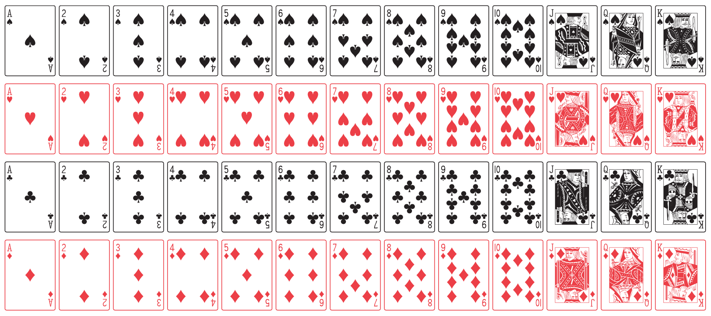

Show answer
coin <- c("heads", "tails")
sample(coin, size = 6, replace = TRUE)Consider a standard deck of 52 cards, as displayed in the following figure.

Consider the following events when a card is randomly selected.
\(A\): card selected is a heart.
\(B\): card selected is color black.
\(C\): card selected is a face card (i.e. J, Q, K)
\(D\): card selected is a King.
\(P(A)\)
\(P(B)\)
\(P(C)\)
\(P(D)\)
\(P(A^c)\)
\(P(B^c)\)
\(P(C^c)\)
\(P(D^c)\)
\(P(A \cap B)\)
\(P(A \cup B)\)
sample(): takes an input vector x, and draws a random sample of a certain size with or without replacement (replace)
vec = 1:10
# sample without replacement
sample(vec, size = 3)
# sample with replacement
sample(vec, size = 3, replace = TRUE)
set.seed(): a number (integer) used by the random number generator(s) in R. It allows us to reproduce the output of sample() and other functions that generate random numbers in R.
set.seed(4321)
# reproducible sample
sample(letters, size = 5)Create a character vector coin that simulates the 2 sides of a coin "heads" and "tails"
Use sample() to simulate tossing a coin 6 times
coin <- c("heads", "tails")
sample(coin, size = 6, replace = TRUE)Create a numeric vector die that simulates the sides of a die (1, 2, 3, 4, 5, 6)
Use sample() to simulate tossing a die 10 times
die <- 1:6
sample(die, size = 10, replace = TRUE)die vector—from the preceding question—write code to simulate rolling a pair of dice, and getting the sum of the spots.die <- 1:6
sum(sample(die, size = 2, replace = TRUE))Create a character vector box containing the letters in the phrase GO BEARS.
Write R code to sample all the letters from box without replacement. Repeat this process no more than 100 times.
If you get a sample "G" "O" "B" "E" "A" "R" "S" (in this order) you win.
box <- c("G", "O", "B", "E", "A", "R", "S")
# run the following command 100 times
sample(box, size = 7)